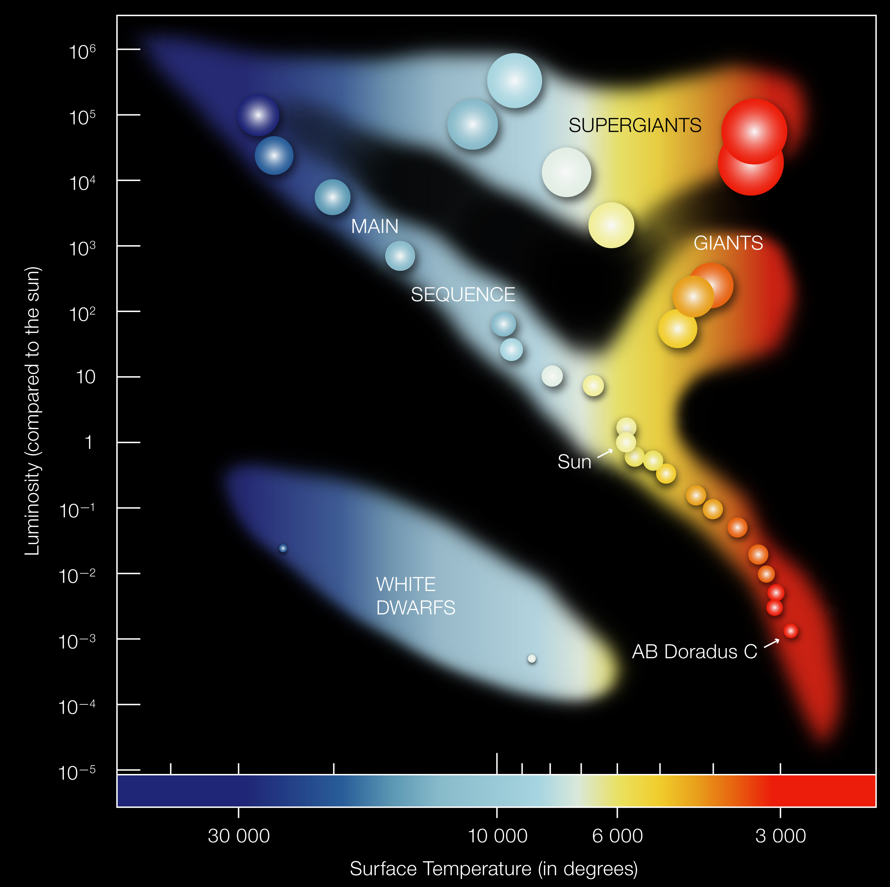
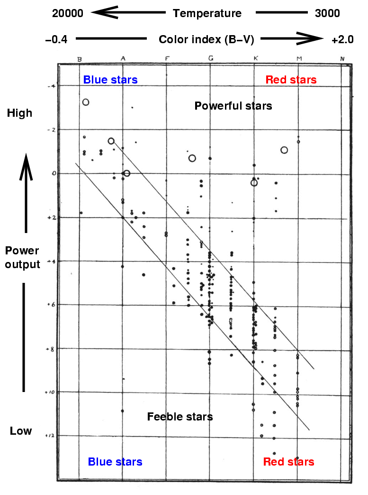
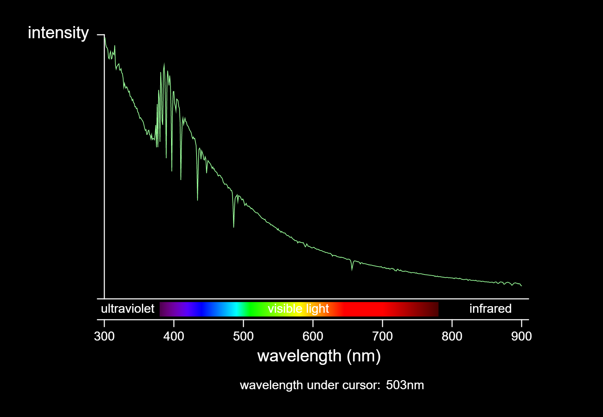
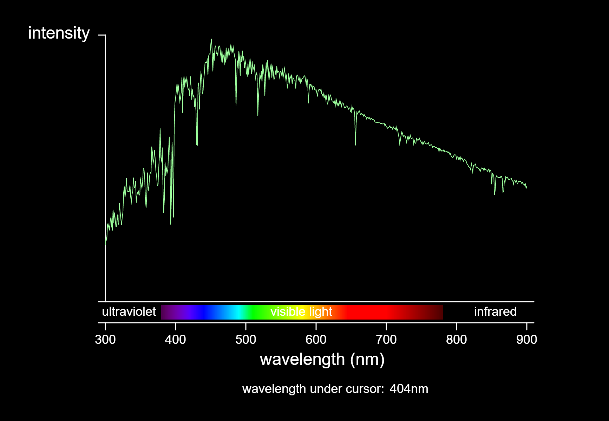
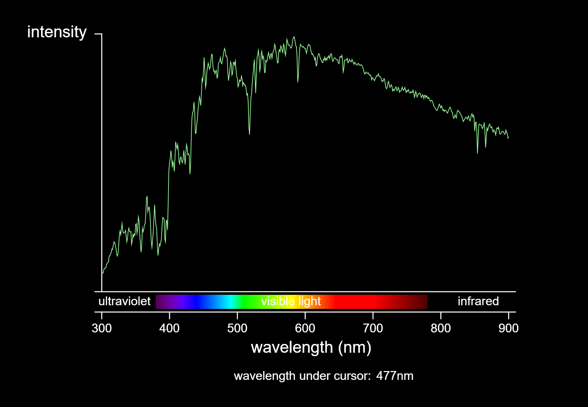
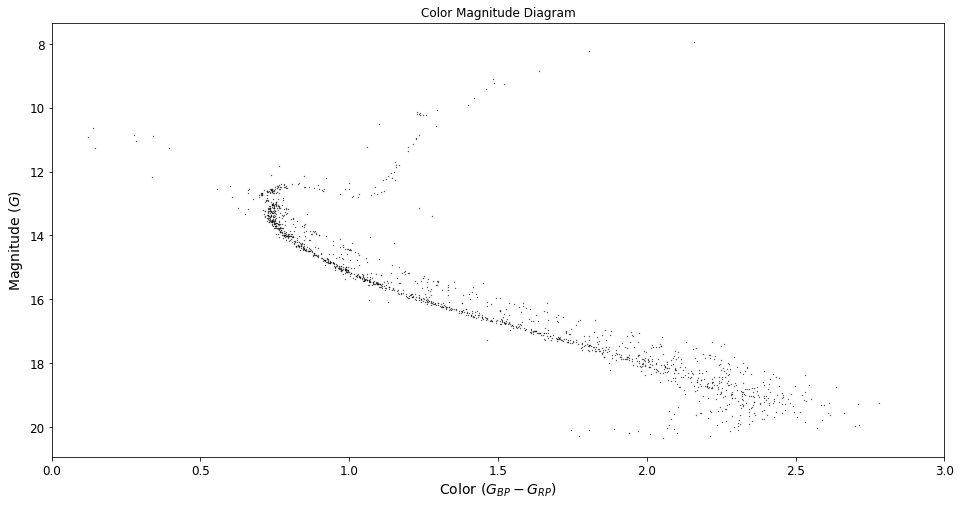
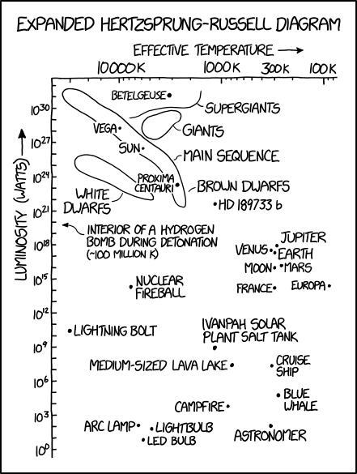

The Hertzsprung–Russell Diagram
Overview

Figure 1.2.1: The Combined, Labelled Hertzsprung-Russell Diagram
(from European Space Astronomy)
The HR Diagram was developed years ago to represent the relationship between the Luminosity, \(L\) and the Surface Temperature, \(T\). Let's start by exploring the history of this diagram.
History

The HR Diagram was the brainchild of its namesake, Danish astronomer Ejnar Hertzsprung (1873 - 1967) and American astronomer Henry Norris Russell (1877 - 1957). It was developed independently by both astronomers, in 1911 and 1914 respectively.
The original HR Diagram was completely different from that pictured in Figure 1.2.1. It looked a lot more than what is shown below:

Figure 1.2.2: The Original HR Diagram
(from Rochester Institute of Technology)
Notice that the y-axis is the Absolute Visual Magnitude, while the x-axis is populated by letters. These are Spectral Classes. Let's get into them.
Star Classification
Spectral Classes
Spectral Classes are used to distinguish between different types of stars, based off color, temperature and other factors. The main factor is essentially the ionisatiom state of the star, although it can just be subtended to the surface temperature of the star. Specifically in the Morgan-Keenan Classification System of classification, which is the standard and was also used by both astronomers, we classify from O, B, A, F, G, K and M.
As we go down the list, the temperature of the star decreases. Often, to abbreviate, we use the following pneumonics:
- "Oh, Be A Fine Girl, K Me"
- "Oh Boy, An F Grade Kills Me"
- "Obama Bought A Freaking Giant Killing Machine"
We often divide the spectral classes into 10 subdivisions, numerically from 0-9. As this number decreases, the stars that occur become hotter. Thus, O0 is the hottest and M9 is the coldest.
To summarise with examples, here's a helpful table!
| Class | Color | Surface Temperature (K) | Example | Actual Class |
|---|---|---|---|---|
| O | Blue | \(30,000 - 60,000\) | Mintaka Aa1 | O9 |
| B | Blue-White | \(10,000 - 30,000\) | Rigel | B8 |
| A | White | \(7500 - 10,000\) | Vega (A0), Sirius (A1) |
|
| F | Yellow-White | \(6000 - 7500\) | Canopus | F0 |
| G | Yellow | \(5000 - 6000\) | Sun, Alpha Centauri | G2 |
| K | Orange | \(3500 - 5000\) | Arcturus (K2), Aldebaran (K5) |
|
| M | Red | \(< 3500\) | Betelgeuse (M2), Barnard's Star (M5) |
If the star is even warmer than the \(60,000\text{ K}\), there is a special class known as the W class, which describes extremely hot and bluish stars known as Wolf-Rayet stars. On the other hand. Brown Dwarves are known to fall into a class lower than M.
Luminosity Classes
The Morgan-Keenan Classification System also accounts for stars of specific luminosities.
| Luminosity Class | Star Type | Example |
|---|---|---|
| I | Supergiants | Betelgeuse (Red Supergiant) |
| II | Bright Giants | |
| III | Giants | |
| IV | Sub Giants | |
| V | Main Sequence Stars | Sun |
Main Sequence is the main class where most stars fall, such as our Sun.
Stellar Spectra (Graphs)
The following is a representation of the Stellar Spectra, broken down by the Spectral and Luminosity Classes as stated above. (Try clicking on one of the tabs, and just shifting your arrow keys. It looks quite cool!)









Notes:
- This data comes from the stellar spectra library described by A.J. Pickles (Proc. Ast. Soc. Pacific, 1998).
- These spectra are not displayed on a fixed intensity scale. The height of each spectrum is stretched to fill the display.
- To display a different spectrum, click a button on the left. By default, the spectrum of a G2V star like the Sun is shown.
- To measure the wavelength of a feature in the spectrum, click or click-and-drag. The wavelength is shown at the bottom of the display.
- For reference, visible light ranges from 400 to 700 nanometers. Ultraviolet is shorter in wavelength, infrared is longer.
The Modern HR Diagram
The diagram looks as such

Figure 1.2.3: The Actual HR Diagram
(From the ESA/HIPPARCOS Mission)
Key Features
The Key Features of the HR Diagram is as follows:
- Vertical Axis is some variant of the Luminosity, \(L\) or Absolute Visual Magnitude, \(M\). As we learnt in The Magnitude Scale, Absolute Visual Magnitude is a scaled form of \(log L\). This can cause the plot to look slightly different, but it's mostly standard.
- Horizontal Axis is Temperature, but note, the axis is flipped. This means that as we go the right of the diagram, the temperature is in fact decreasing.
The shape on the graph is largely predicated on what stars you identify, but most stars, as mentioned before, fall into the main sequence, the long line spanning the top left to bottom right of the graph. For the sake of this discussion, let's briefly go through each type of star.
Main Sequence
The behaviour of the main sequence stars is aptly describe by the Stefan-Boltzmann law, which states
Based of the above rule, we've been able to gether that stars with higher temperatures largely shine brighter. It is crucial to note that \(T\) is scaled up via the significant exponent, that being "4". Hence most stars do operate based on this logic.
For instance, here is a diagram I've plotted to show the relation:

Figure 1.2.4: A plot of the possible pattern of main sequence stars. This assumes R is on a exponentiated normal distribution about the radius of the Sun, and T is varied on the given list.
Code Used to Create the Plot above
# Plot of Main Sequence Stars
import numpy as np
import matplotlib.pyplot as plt
from matplotlib.figure import Figure
from matplotlib import image
from matplotlib.offsetbox import OffsetImage, AnnotationBbox
plt.rcParams['axes.facecolor']='black'
plt.rcParams['savefig.facecolor']='black'
T = np.linspace(5000, 10000, 1000000)
sigma = 5.67e-8
R = np.sort(2**np.random.normal(0, 0.5, 1000000)) * 6.9634e9
L = np.pi * R**2 * sigma * T**4
# Initialize Subplots
fig, ax = plt.subplots(figsize=(10, 10), facecolor = "black")
# Plot Axes
ax.plot(T, L, c = "white", alpha = 0.8)
# Remove top and right spines
ax.spines['top'].set_visible(False)
ax.spines['right'].set_visible(False)
# Set Everything as White
ax.spines['bottom'].set_color('white')
ax.spines['left'].set_color('white')
ax.xaxis.label.set_color('white')
ax.yaxis.label.set_color('white')
ax.tick_params(axis='x', colors='white')
ax.tick_params(axis='y', colors='white')
# Create 'x' and 'y' labels
ax.set_xlabel('T', size = 14, x = 1.02)
ax.set_ylabel('L', size = 14, rotation = 0, y = 1.02, x = 0)
ax.set(xlim = (5000, 10500), ylim=(1e25, 1e31))
ax.invert_xaxis()
ax.set_yscale('log')
# Set bottom and left spines as x and y axes of coordinate system
ax.spines['bottom'].set_position(('data', 1e25))
ax.spines['left'].set_position(('data', 10500))
# Draw arrows
arrow_fmt = dict(markersize=4, color='white', clip_on=False)
ax.plot((1), (0), marker='>', transform=ax.get_yaxis_transform(), **arrow_fmt)
ax.plot((0), (1), marker='^', transform=ax.get_xaxis_transform(), **arrow_fmt)
ax.text(7500, 1e29, "$L = Ae\sigma T^4$", color = "white", fontsize=20)
plt.show()
Of course, you can always relate it to the star's nuclear output, which is governed by Einstein's most famous equation,
This means that logically, a more massive star has a higher radioactive output, which means that the mass has a significant effect on this situation as will. Stars often spend billions and billions of years in this class, before it moves on to others.
Pre-Main Sequence
Pre-Main Sequence Stars tend to follow two different tracks to enter on their journey, the Henyey and Hayashi Tracks.
To represent them as a diagram, here is a good depiction:


Source: Wikipedia
The Hayashi Track

The Hayashi Track is the almost vertical "path" that protostars (with masses less than \(3 M_\odot\)) take down the HR diagram.
It represents the gravitational collapse of T Tauri stars, wherein the collapsing star becomes less luminous because as the star contracts, there is less area available for the star to emit light.
The Henyey Track
The Henyey Track is a the nearly horizontal "path" to the main sequence that stars take after the Hayashi track, or right as they form if they have sufficient mass kickstart hydrogen fusion in their cores. This is when the nuclear fusion has just started and the star is slowly but surely collapsing in order to reach a hydrostatic equilibrium. Throughout this, the star becomes hotter, even whilst staying at a consistent luminosity. Stars that enter the Henyey track directly are known as Herbig Ae/Be Stars.
Giants and Supergiants
Giants and Supergiants often tend to be red in color, which usually means their temperatures are very low. However, due to their relative sizes and radii, they shine much, much brighter than even some blue main sequence stars. As we will later learn, Giants are mostly formed after a while of a main sequence star existing, and their masses are also much larger. Usually, these occur the most after main sequence stars, but due to their intense luminosities, the red giant stars are vaguely visible via the naked eye, which means a large proportion of stars we see in the sky are in fact red giants.
Here are some notable giants and supergiants you can find in the night sky:
| Star | Classification |
|---|---|
| Arcturus | Giant |
| Aldebaran | Giant |
| Antares | Supergiant |
| Betelgeuse | Supergiant |
Dwarves
Dwarves don't commonly occur, since the universe isn't old enough for such dwarves to have been formed in large majority. However, their characteristic abnormality is their lowly radiative luminosity given their high temperatures. Here are some notable dwarf stars you may have heard of:
- Sirius B
- Procyon B
- 40 Eridani B
Notice that these stars are often the "B" star, which means secondary in the system. This is because they often orbit around a larger main sequence star which is the "A" star. We will read more about dwarves later.
Key Variations of the Diagram
Color Magnitude Diagrams
Color Magnitude Diagrams are another way of approaching HR Diagrams. They are slightly varied, for instance using Magnitude instead of Luminosity, and "Color" instead of Temperature.

Figure 1.2.5: A Color Magnitude Diagram based on the Data from the Gaia Early Data Release 3 (eDR3), specifically pertaining to the M67 Cluster as obtained via the HDBScan algorithm
(Data Courtesy of the Gaia Early Data Release 3)
Why was the above done?
This work was done as part of the Astrochallenge 2022 Data Analysis Question.
As you can see, most of the features commonly associated with the HR Diagram, like the Supergiants and Dwarves and more, are missing, but why?
This is mainly caused by the fact that M67 is a cluster that holds mostly stars that would have been created via the same molecular cloud. This means that their compositions and sizes are likely to be the same, other than perhaps some stars that have slowly edges towards giants, causing a slight movement. However, something that was strangely found was that if you actually obtained the entire Color Magnitude Diagram in the direction of M67, we would get a huge, HUGE patch underneath the main sequence line.

Figure 1.2.6: The Actual Color Magnitude Diagram based on the Data from the Gaia Early Data Release 3 (eDR3), in the direction of the M67 Cluster. Highlighted in Blue is the M67 Color Magnitude Diagram as in Figure 1.2.5
(Data Courtesy of the Gaia Early Data Release 3)
The reason for this is that not all of these are moving away at precisely the same speeds, whereas based on our current understanding of cosmology, the cluster itself moves slowly but roughly at the same speed away from us. This was in fact how we obtained the M67 cluster from the data, which is pretty cool.
The XKCD Cut
The person from XKCD developed an amazing image illustrating an "expanded" version on the HR Diagram in Figure 1.2.1. See below:

The "Expanded" Hertzprung Russell Diagram
(Brought to you by XKCD)